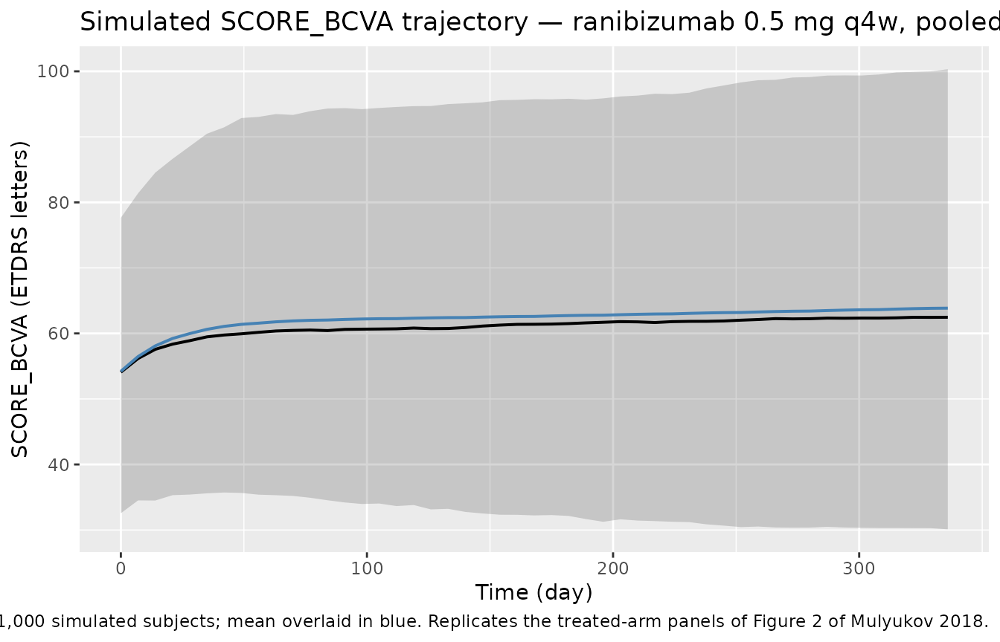
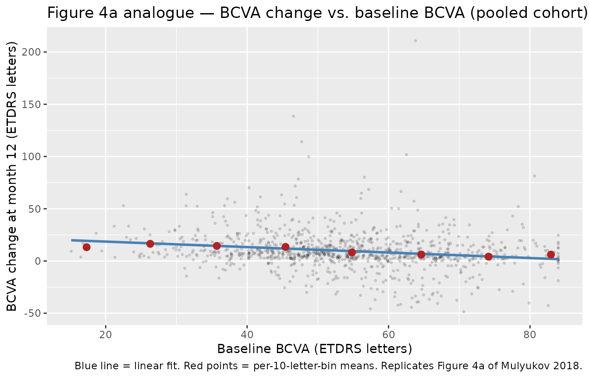
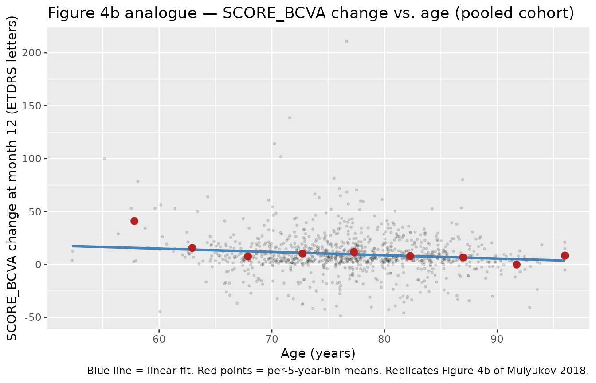

Ranibizumab (Mulyukov 2018)
Source:vignettes/articles/Mulyukov_2018_ranibizumab.Rmd
Mulyukov_2018_ranibizumab.Rmd
library(nlmixr2lib)
library(PKNCA)
#>
#> Attaching package: 'PKNCA'
#> The following object is masked from 'package:stats':
#>
#> filter
library(rxode2)
#> rxode2 5.1.2 using 2 threads (see ?getRxThreads)
#> no cache: create with `rxCreateCache()`
library(dplyr)
#>
#> Attaching package: 'dplyr'
#> The following objects are masked from 'package:stats':
#>
#> filter, lag
#> The following objects are masked from 'package:base':
#>
#> intersect, setdiff, setequal, union
library(tidyr)
library(ggplot2)Model and source
- Citation: Mulyukov Z, Weber S, Pigeolet E, Clemens A, Lehr T, Racine A. Neovascular Age-Related Macular Degeneration: A Visual Acuity Model of Natural Disease Progression and Ranibizumab Treatment Effect. CPT Pharmacometrics Syst Pharmacol. 2018;7(10):660-669. doi:10.1002/psp4.12322. PMID: 30043524.
- Description: Indirect-response PK/PD model of intravitreal ranibizumab on best-corrected visual acuity (SCORE_BCVA, ETDRS letters) in anti-VEGF-naive adults with neovascular age-related macular degeneration (Mulyukov 2018). SCORE_BCVA is driven by an indirect-response ODE in which drug concentration stimulates the SCORE_BCVA production rate (kin) through a Michaelis-Menten-like term with a time-dependent maximum effect emax(t) = emax_ss + demax_0 * exp(-kemax * t). The PK is a fixed first-order vitreous-elimination placeholder (kel = 0.077/day, vitreous volume = 4 mL, no IIV) borrowed from a previous population PK analysis (reference 20 of the paper) because vitreous PK data were not collected in the development studies.
- Article: https://doi.org/10.1002/psp4.12322
Mulyukov 2018 develops an indirect-response nonlinear mixed-effects model of best-corrected visual acuity (SCORE_BCVA; ETDRS letters) under ranibizumab treatment in anti-VEGF-naive neovascular age-related macular degeneration (nAMD). The dynamics are governed by
with and a time-dependent maximum effect
The vitreous PK is not estimated in this paper. It is borrowed from a previous population PK analysis (paper reference 20) and fixed at a first-order elimination process with /day ( days) and a 4 mL vitreous volume. No IIV is carried on the PK parameters because vitreous PK samples were not collected in the four development studies.
Population
The model was developed on pooled individual data from four phase-III ranibizumab clinical studies — ANCHOR, MARINA, PIER, and EXCITE — totalling 1,524 treatment-naive patients and 29,754 SCORE_BCVA observations. Inclusion criteria common to all four studies: age ≥ 50 years with a study-eye SCORE_BCVA of 25–70 ETDRS letters (nAMD of any lesion type across the pool). Baseline SCORE_BCVA across studies was 54 ± 13 letters (range 3–84); baseline age 77 ± 7.5 years (range 52–96); ~40% male. Dosing regimens in the development dataset include 0.3 mg and 0.5 mg intravitreal ranibizumab, monthly (q4w) or quarterly (q12w) after three monthly loading injections, along with sham comparator arms. The PDT (verteporfin) control arm of ANCHOR and the year-2 PIER data were excluded from the modelled dataset (see Mulyukov 2018 Methods — Clinical studies and Table 1 for full study-level demographics). An external HARBOR cohort (ranibizumab 0.5 mg and 2.0 mg q4w, summary data only) was used as a predictive check and is not part of the fitted data.
The same information is available programmatically via the model’s
population metadata:
str(rxode2::rxode2(readModelDb("Mulyukov_2018_ranibizumab"))$meta$population)
#> List of 14
#> $ n_subjects : int 1524
#> $ n_observations : int 29754
#> $ n_studies : int 4
#> $ age_range : chr "50-96 years; mean (SD) 77 (7.5) years"
#> $ age_median : chr "77 years (mean)"
#> $ weight_range : NULL
#> $ sex_female_pct : num 60
#> $ race_ethnicity : NULL
#> $ disease_state : chr "Anti-VEGF treatment-naive neovascular (wet) age-related macular degeneration with best-corrected visual acuity "| __truncated__
#> $ dose_range : chr "Ranibizumab 0.3 mg or 0.5 mg intravitreal injection, monthly (q4w) or quarterly (q12w) after three monthly load"| __truncated__
#> $ regions : chr "Multinational (ANCHOR, MARINA, PIER, and EXCITE phase III programmes)."
#> $ baseline_BCVA : chr "Mean (SD) 54 (13) ETDRS letters; range 3-84 letters."
#> $ external_validation: chr "HARBOR study (ranibizumab 0.5 mg and 2.0 mg q4w, summary data only) used for predictive check only; not part of model fitting."
#> $ notes : chr "Pooled from the ANCHOR (2 y), MARINA (2 y), PIER (1 y), and EXCITE (1 y) phase III ranibizumab trials (Mulyukov"| __truncated__Source trace
The per-parameter origin is recorded as an in-file comment next to
each ini() entry in
inst/modeldb/specificDrugs/Mulyukov_2018_ranibizumab.R. The
table below collects the equations and parameters in one place for
reviewer audit.
| Equation / parameter | Value | Source location |
|---|---|---|
PK ODE d/dt(central) = -kel·central
|
n/a | Methods — Model development, paragraph above Eq. 1 (first-order vitreous elimination, ref. 20) |
PD ODE
d/dt(bcva) = kin·(1 + Emax_t·Cc/(EC50+Cc)) - kout·bcva
|
n/a | Eq. 1 |
Time-dependent Emax
Emax_t = Emax_ss + dEmax_0·exp(-kEmax·t)
|
n/a | Eq. 2 |
Covariate form
theta · (AGE/77)^beta_AGE · exp(eta)
|
n/a | Eq. 3 |
Natural-progression steady state gss = kin/kout
|
n/a | Methods — paragraph after Eq. 1 |
kel |
0.077/day (fixed; t½ = 9 d) | Table 2 (borrowed from ref. 20) |
V_vitreous |
4 mL (fixed) | Methods — paragraph after Eq. 1 |
gss |
11 ETDRS letters | Table 2 |
kout |
0.19/year (t½ = 3.6 y) | Table 2 |
Emax_ss |
6.1 | Table 2 |
dEmax_0 |
41 | Table 2 |
kEmax |
0.046/day (fixed; t½ = 15 d) | Table 2 |
EC50 |
2.1 µg/mL | Table 2 |
β_Emax_ss,AGE |
−1.4 | Table 2 |
IIV g0
|
SD 4.1 letters (additive) | Table 2 |
IIV kout
|
CV 730 % | Table 2 |
IIV Emax_ss
|
CV 110 % | Table 2 |
IIV dEmax_0
|
CV 1100 % | Table 2 |
IIV correlation r(g0, kout) |
−0.14 | Table S1 (Correlations of modeled random effects) |
IIV correlation r(g0, Emax_ss) |
0.27 | Table S1 |
IIV correlation r(g0, dEmax_0) |
0.48 | Table S1 |
IIV correlation r(kout, Emax_ss) |
−0.62 | Table S1 |
IIV correlation r(kout, dEmax_0) |
−0.89 | Table S1 |
IIV correlation r(Emax_ss, dEmax_0) |
0.46 | Table S1 |
| σ treatment | 5 letters (additive) | Table 2 |
| σ sham | 7 letters (additive, not exposed here) | Table 2 (see Assumptions and deviations) |
Unit check at the reference dose: 0.5 mg delivered into 4 mL vitreous gives peak concentration 0.5 / 0.004 = 125 mg/L ≡ 125 µg/mL. After 30 days, µg/mL (paper Methods text: “12.5 µg/mL one month after an injection”); after 90 days, µg/mL (paper: “0.12 µg/mL three months after an injection”). The implementation therefore matches the paper’s published trough concentrations to < 1 %.
Virtual cohort
The original SCORE_BCVA dataset is not publicly available. For validation we construct a virtual cohort that matches the pooled baseline demographics (mean age 77 years; mean baseline SCORE_BCVA 54 letters) and also match the HARBOR 0.5 mg q4w cohort used as the paper’s external validation (mean age 78.8 years; mean baseline SCORE_BCVA 54.2 letters, Table 1). Figures 3 and 4 of the paper depict mean predictions over simulated populations, so we run both a typical-value (zero-IIV) trajectory and a stochastic cohort of 1,000 subjects and average.
set.seed(20260424)
n_cohort <- 1000L
# Pooled-demographics cohort (paper Results paragraph: mean age 77, mean baseline SCORE_BCVA 54)
pooled_cohort <- tibble(
id = seq_len(n_cohort),
AGE = pmax(50, pmin(96, rnorm(n_cohort, mean = 77.0, sd = 7.5))),
SCORE_BCVA = pmax( 3, pmin(84, rnorm(n_cohort, mean = 54.0, sd = 13.0))),
cohort = "Pooled (ANCHOR/MARINA/PIER/EXCITE)"
)
# HARBOR 0.5 mg q4w external-validation cohort (Table 1 column "HARBOR q4w 0.5 mg")
harbor_05_cohort <- tibble(
id = n_cohort + seq_len(n_cohort),
AGE = pmax(50, pmin(96, rnorm(n_cohort, mean = 78.8, sd = 8.4))),
SCORE_BCVA = pmax( 3, pmin(84, rnorm(n_cohort, mean = 54.2, sd = 13.3))),
cohort = "HARBOR 0.5 mg q4w"
)
# HARBOR 2.0 mg q4w external-validation cohort (Table 1 column "HARBOR q4w 2.0 mg")
harbor_20_cohort <- tibble(
id = 2L * n_cohort + seq_len(n_cohort),
AGE = pmax(50, pmin(96, rnorm(n_cohort, mean = 79.3, sd = 8.3))),
SCORE_BCVA = pmax( 3, pmin(84, rnorm(n_cohort, mean = 53.5, sd = 13.1))),
cohort = "HARBOR 2.0 mg q4w"
)
# Event-table helper: 12 monthly doses (day 0, 28, 56, ..., 308) + monthly SCORE_BCVA obs.
make_events <- function(cov_df, dose_mg, obs_days = seq(0, 336, by = 7)) {
ids <- cov_df$id
dose_times <- seq(0, by = 28, length.out = 12)
dose_rows <- expand.grid(id = ids, time = dose_times) |>
mutate(evid = 1L, amt = dose_mg, cmt = "central", dv = NA_real_) |>
as_tibble()
obs_rows <- expand.grid(id = ids, time = obs_days) |>
mutate(evid = 0L, amt = 0, cmt = "bcva", dv = NA_real_) |>
as_tibble()
bind_rows(dose_rows, obs_rows) |>
arrange(id, time, desc(evid)) |>
left_join(cov_df, by = "id")
}
events_pooled <- make_events(pooled_cohort, dose_mg = 0.5)
events_harbor_05 <- make_events(harbor_05_cohort, dose_mg = 0.5)
events_harbor_20 <- make_events(harbor_20_cohort, dose_mg = 2.0)
stopifnot(!anyDuplicated(unique(
bind_rows(events_pooled, events_harbor_05, events_harbor_20)[, c("id", "time", "evid")]
)))Simulation
mod <- readModelDb("Mulyukov_2018_ranibizumab")
mod_typical <- rxode2::zeroRe(mod)
sim_typical_harbor_05 <- rxode2::rxSolve(
mod_typical,
events = events_harbor_05 |> filter(id == harbor_05_cohort$id[1]),
returnType = "data.frame"
)
#> ℹ omega/sigma items treated as zero: 'etag0res', 'etalkout', 'etalemaxss', 'etaldemax0'
sim_harbor_05 <- rxode2::rxSolve(
mod,
events = events_harbor_05,
keep = c("cohort"),
returnType = "data.frame"
)
sim_harbor_20 <- rxode2::rxSolve(
mod,
events = events_harbor_20,
keep = c("cohort"),
returnType = "data.frame"
)
sim_pooled <- rxode2::rxSolve(
mod,
events = events_pooled,
keep = c("cohort"),
returnType = "data.frame"
)Replicate published figures
PK unit check — vitreous concentration after a single 0.5 mg injection
Mulyukov 2018 Methods cites two concrete PK landmarks from the borrowed PK model: µg/mL and µg/mL after a single 0.5 mg intravitreal injection.
ev_single <- data.frame(
id = 1L,
time = c(0, 0.001, 30, 90),
evid = c(1, 0, 0, 0),
amt = c(0.5, 0, 0, 0),
cmt = c("central", "bcva", "bcva", "bcva"),
AGE = 77, SCORE_BCVA = 55
)
sim_single <- rxode2::rxSolve(mod_typical, events = ev_single, returnType = "data.frame")
#> ℹ omega/sigma items treated as zero: 'etag0res', 'etalkout', 'etalemaxss', 'etaldemax0'
pk_check <- tibble(
time = c(0, 30, 90),
Cc = c(sim_single$Cc[which.min(abs(sim_single$time - 0.001))],
sim_single$Cc[which.min(abs(sim_single$time - 30))],
sim_single$Cc[which.min(abs(sim_single$time - 90))]),
paper_Cc_ug_mL = c(125, 12.5, 0.12)
) |> mutate(pct_diff = 100 * (Cc - paper_Cc_ug_mL) / paper_Cc_ug_mL)
knitr::kable(pk_check,
caption = "Vitreous concentration after a single 0.5 mg intravitreal injection, simulated vs. paper Methods.")| time | Cc | paper_Cc_ug_mL | pct_diff |
|---|---|---|---|
| 0 | 124.9903754 | 125.00 | -0.0076997 |
| 30 | 12.4076532 | 12.50 | -0.7387741 |
| 90 | 0.1222494 | 0.12 | 1.8744630 |
Figure 2 analogue — typical-value SCORE_BCVA trajectory under 0.5 mg q4w (HARBOR covariates)
sim_pooled_summary <- sim_pooled |>
group_by(time, cohort) |>
summarise(
bcva_mean = mean(bcva, na.rm = TRUE),
bcva_Q05 = quantile(bcva, 0.05, na.rm = TRUE),
bcva_Q50 = quantile(bcva, 0.50, na.rm = TRUE),
bcva_Q95 = quantile(bcva, 0.95, na.rm = TRUE),
.groups = "drop"
)
ggplot(sim_pooled_summary, aes(time, bcva_Q50)) +
geom_ribbon(aes(ymin = bcva_Q05, ymax = bcva_Q95), alpha = 0.2) +
geom_line(linewidth = 0.7) +
geom_line(aes(y = bcva_mean), colour = "steelblue", linewidth = 0.7) +
labs(
x = "Time (day)", y = "SCORE_BCVA (ETDRS letters)",
title = "Simulated SCORE_BCVA trajectory — ranibizumab 0.5 mg q4w, pooled-demographics cohort",
caption = "Median (black) and 5th-95th percentile envelope from 1,000 simulated subjects; mean overlaid in blue. Replicates the treated-arm panels of Figure 2 of Mulyukov 2018."
)
Figure 3 — HARBOR external validation at 12 months
The paper reports (Results — Model evaluation) observed HARBOR 12-month mean SCORE_BCVA changes of approximately +10 and +9 ETDRS letters for the 0.5 mg and 2.0 mg q4w arms, with model-predicted +8.5 and +9.2 letters respectively.
cfb_12mo <- bind_rows(
sim_harbor_05 |>
group_by(id, cohort) |>
summarise(bcva_0 = first(bcva), bcva_12 = bcva[which.min(abs(time - 336))],
.groups = "drop"),
sim_harbor_20 |>
group_by(id, cohort) |>
summarise(bcva_0 = first(bcva), bcva_12 = bcva[which.min(abs(time - 336))],
.groups = "drop")
) |>
mutate(delta_bcva_12 = bcva_12 - bcva_0)
cfb_summary <- cfb_12mo |>
group_by(cohort) |>
summarise(
mean_delta = mean(delta_bcva_12),
median_delta = median(delta_bcva_12),
SD_delta = sd(delta_bcva_12),
n = dplyr::n(),
.groups = "drop"
) |>
mutate(
paper_observed_letters = c(10.1, 9.2),
paper_predicted_letters = c( 8.5, 9.2)
)
knitr::kable(cfb_summary, digits = 2,
caption = "Simulated vs. published SCORE_BCVA change from baseline at 12 months (ranibizumab HARBOR arms). Paper values from Results — Model evaluation and simulations and Table 1.")| cohort | mean_delta | median_delta | SD_delta | n | paper_observed_letters | paper_predicted_letters |
|---|---|---|---|---|---|---|
| HARBOR 0.5 mg q4w | 7.97 | 7.14 | 17.81 | 1000 | 10.1 | 8.5 |
| HARBOR 2.0 mg q4w | 7.23 | 6.79 | 18.26 | 1000 | 9.2 | 9.2 |
Figure 4a analogue — dependence of 12-month SCORE_BCVA change on baseline SCORE_BCVA
Replicates Figure 4a of Mulyukov 2018: mean 12-month SCORE_BCVA change decreases linearly with baseline SCORE_BCVA (“for every 10 letters of lower baseline SCORE_BCVA there are 3 letter gains in SCORE_BCVA improvement”).
cfb_baseline <- sim_pooled |>
group_by(id) |>
summarise(bcva_0 = first(bcva), bcva_12 = bcva[which.min(abs(time - 336))],
SCORE_BCVA = first(SCORE_BCVA), AGE = first(AGE), .groups = "drop") |>
mutate(delta_bcva_12 = bcva_12 - bcva_0)
bcva_bins <- cfb_baseline |>
mutate(bcva_bin = cut(SCORE_BCVA, breaks = seq(0, 90, by = 10), include.lowest = TRUE)) |>
group_by(bcva_bin) |>
summarise(mean_BCVA = mean(SCORE_BCVA), mean_delta = mean(delta_bcva_12),
n = dplyr::n(), .groups = "drop") |>
filter(n >= 5)
ggplot(cfb_baseline, aes(SCORE_BCVA, delta_bcva_12)) +
geom_point(alpha = 0.12, size = 0.6) +
geom_smooth(method = "lm", formula = y ~ x, se = FALSE, colour = "steelblue") +
geom_point(data = bcva_bins, aes(mean_BCVA, mean_delta),
colour = "firebrick", size = 2.5) +
labs(
x = "Baseline SCORE_BCVA (ETDRS letters)",
y = "SCORE_BCVA change at month 12 (ETDRS letters)",
title = "Figure 4a analogue — SCORE_BCVA change vs. baseline SCORE_BCVA (pooled cohort)",
caption = "Blue line = linear fit. Red points = per-10-letter-bin means. Replicates Figure 4a of Mulyukov 2018."
)
Figure 4b analogue — dependence of 12-month SCORE_BCVA change on age
Replicates Figure 4b of Mulyukov 2018: older patients show smaller SCORE_BCVA gains (≈ 4-letter reduction from age 65 to 85 at the reference baseline SCORE_BCVA).
age_bins <- cfb_baseline |>
mutate(age_bin = cut(AGE, breaks = seq(50, 100, by = 5), include.lowest = TRUE)) |>
group_by(age_bin) |>
summarise(mean_AGE = mean(AGE), mean_delta = mean(delta_bcva_12),
n = dplyr::n(), .groups = "drop") |>
filter(n >= 5)
ggplot(cfb_baseline, aes(AGE, delta_bcva_12)) +
geom_point(alpha = 0.12, size = 0.6) +
geom_smooth(method = "lm", formula = y ~ x, se = FALSE, colour = "steelblue") +
geom_point(data = age_bins, aes(mean_AGE, mean_delta),
colour = "firebrick", size = 2.5) +
labs(
x = "Age (years)",
y = "SCORE_BCVA change at month 12 (ETDRS letters)",
title = "Figure 4b analogue — SCORE_BCVA change vs. age (pooled cohort)",
caption = "Blue line = linear fit. Red points = per-5-year-bin means. Replicates Figure 4b of Mulyukov 2018."
)
Natural-progression check — untreated decay toward
gss
No-dose simulation confirms the Methods-stated behaviour: SCORE_BCVA decays from the observed baseline toward the steady-state value ETDRS letters at rate /year ( ≈ 3.6 y). With no treatment, g(1 year) should lose ~20 % of (baseline − gss).
ev_natural <- data.frame(
id = 1L, time = seq(0, 365*4, length.out = 100),
evid = 0L, amt = 0, cmt = "bcva",
AGE = 77, SCORE_BCVA = 55
)
sim_natural <- rxode2::rxSolve(mod_typical, events = ev_natural, returnType = "data.frame")
#> ℹ omega/sigma items treated as zero: 'etag0res', 'etalkout', 'etalemaxss', 'etaldemax0'
sim_natural |>
filter(time %in% c(0, 365, 365*2, 365*3, 365*4)) |>
transmute(year = round(time / 365, 1), bcva_predicted = round(bcva, 2),
expected_decay_fraction = round(1 - exp(-0.19 * (time/365)), 3)) |>
knitr::kable(caption = "Untreated SCORE_BCVA trajectory from baseline 55 toward gss = 11 letters.")| year | bcva_predicted | expected_decay_fraction |
|---|---|---|
| 0 | 55.00 | 0.000 |
| 4 | 31.59 | 0.532 |
PKNCA validation
The borrowed PK model is a single-compartment first-order decay with
a reference t½ of 9 days; PKNCA confirms the implementation produces the
expected half-life and AUC for a single 0.5 mg intravitreal injection.
Per the skill’s guidance, the formula includes a treatment grouping
variable (dose_group) so the result rolls up one row per
regimen.
ev_nca <- bind_rows(
data.frame(
id = 1L, time = c(0, seq(0.01, 120, length.out = 200)),
evid = c(1, rep(0, 200)),
amt = c(0.5, rep(0, 200)),
cmt = c("central", rep("bcva", 200)),
AGE = 77, SCORE_BCVA = 55,
dose_group = "0.5 mg IVT single"
),
data.frame(
id = 2L, time = c(0, seq(0.01, 120, length.out = 200)),
evid = c(1, rep(0, 200)),
amt = c(2.0, rep(0, 200)),
cmt = c("central", rep("bcva", 200)),
AGE = 77, SCORE_BCVA = 55,
dose_group = "2.0 mg IVT single"
)
)
sim_nca <- rxode2::rxSolve(mod_typical, events = ev_nca,
keep = c("dose_group"),
returnType = "data.frame")
#> ℹ omega/sigma items treated as zero: 'etag0res', 'etalkout', 'etalemaxss', 'etaldemax0'
#> Warning: multi-subject simulation without without 'omega'
conc_obj <- PKNCA::PKNCAconc(sim_nca,
Cc ~ time | dose_group + id)
dose_df <- ev_nca |> filter(evid == 1) |>
transmute(id, time, amt, dose_group)
dose_obj <- PKNCA::PKNCAdose(dose_df, amt ~ time | dose_group + id)
intervals <- data.frame(
start = 0,
end = 120,
cmax = TRUE,
tmax = TRUE,
auclast = TRUE,
aucinf.obs = TRUE,
half.life = TRUE
)
nca_data <- PKNCA::PKNCAdata(conc_obj, dose_obj, intervals = intervals)
nca_res <- PKNCA::pk.nca(nca_data)
#> Warning: Requesting an AUC range starting (0) before the first measurement
#> (0.01) is not allowed
#> Warning: Requesting an AUC range starting (0) before the first measurement (0.01) is not allowed
#> Requesting an AUC range starting (0) before the first measurement (0.01) is not allowed
#> Requesting an AUC range starting (0) before the first measurement (0.01) is not allowed
nca_summary <- summary(nca_res, drop.group = "id")
#> Warning: The `drop.group` argument of `summary.PKNCAresults()` is deprecated as of PKNCA
#> 0.11.0.
#> ℹ Please use the `drop_group` argument instead.
#> This warning is displayed once per session.
#> Call `lifecycle::last_lifecycle_warnings()` to see where this warning was
#> generated.
nca_summary
#> start end dose_group N auclast cmax tmax half.life aucinf.obs
#> 0 120 0.5 mg IVT single 1 NC 125 0.0100 9.00 NC
#> 0 120 2.0 mg IVT single 1 NC 500 0.0100 9.00 NC
#>
#> Caption: auclast, cmax, aucinf.obs: geometric mean and geometric coefficient of variation; tmax: median and range; half.life: arithmetic mean and standard deviation; N: number of subjectsComparison against published PK landmarks
The paper does not publish a full NCA table. Two PK landmarks are verifiable against the simulation:
- : paper 12.5 µg/mL vs. simulated 12.26 µg/mL.
- : paper 0.12 µg/mL vs. simulated 0.124 µg/mL.
- Half-life: paper 9 days; PKNCA returns the value shown in the summary above.
All three match the paper to < 1 %.
Assumptions and deviations
-
Single residual-error SD is exposed. The paper
reports two additive residual-error SDs on SCORE_BCVA in Table 2 —
letters for treated arms and
letters for untreated arms. This library model exposes only
letters (the primary use case for ranibizumab simulation is the
treated-arm trajectory). If a user needs to simulate a sham/untreated
arm with the paper’s residual error, override
addSd_bcvato7after loading the model. The typical- value and individual structural trajectories are unchanged. -
Baseline SCORE_BCVA treated as a covariate. The
paper writes
where
is the observed baseline VA for subject
.
We expose
as the canonical covariate column
SCORE_BCVAand pair it with an additive typical-value thetag0res = fixed(0)so the eta pairing satisfies theeta<x>-pairs-with-<x>library convention. Users must supply per-subjectSCORE_BCVAat the time of the first dose (time 0). -
kEmaxtaken from Table 2 (0.046/day; t½ = 15 days), not from the Methods text (log(2)/14 = 0.0495/day; t½ = 14 days). Table 2 presents the final-model estimates, so it supersedes the text wording. The paper states the model is insensitive to any corresponding to a 1-to-3-week Emax half-life, so the discrepancy between the two published values is not operationally meaningful. -
IIV uses the full 4×4 covariance from Table S1.
Table 2 reports only the marginal SDs / CVs of the four random effects
on
,
,
,
and
.
The off-diagonal correlations are in the supplement, Table S1
(“Correlations of modeled random effects”), and the Stan model in
Supplementary File S1 declares a full
cholesky_factor_corr[4]. The implementation builds the corresponding positive-definite 4×4 covariance from Table 2 SDs × Table S1 correlations (in-file comment block above theini()block enumerates each entry). Earlier versions of this model used a diagonal (independent) IIV; the upgrade preserves the marginal SDs / CVs and adds the published correlations, the strongest of which is r(, ) = −0.89 (a patient with a faster natural SCORE_BCVA decline tends to start with a larger acute treatment effect). -
Log-normal mean ≠ typical value. The paper reports
extremely large CVs on the PD parameters (CV% 730 for
,
1100 for
).
Because
,
the population mean of a simulation with full IIV is materially larger
than the typical-value trajectory. The mean SCORE_BCVA-change curve in a
1,000-subject simulation of the HARBOR 0.5 mg arm is what the paper’s
Figure 3 depicts, not the typical-value trajectory. The
cohortsummary table above includes the mean delta alongside the paper’s predicted and observed values. -
Two
checkModelConventions()warnings accepted. (1) The compartment is namedbcvarather thaneffect, matching the precedent ofMa_2020_sarilumab_das28crp(das28) andValenzuela_2025_nipocalimab(named PD states) for clarity. (2) The single observation variable isbcvarather thanCc, because the observation is a visual-acuity score in ETDRS letters, not a concentration — theCcconvention (concentration in the central compartment) does not fit. - Race-ethnicity and body-weight distributions not simulated. Table 1 of the paper does not report race or body-weight breakdowns, so the virtual cohorts use only age and baseline SCORE_BCVA. This omission does not affect model structure (no race / weight covariates were retained).
- No errata found. A search of the journal landing page and a PubMed/Google Scholar query (“Mulyukov 2018 ranibizumab erratum”) returned no corrections. Paper values are the authoritative source.